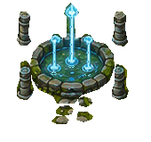
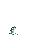

Fonte
Jatos e pequenas ondas · ciclo de 0,70 s
A pedra, as colunas e a silhueta permanecem fixas.
Arte integrada para a fonte, a cascata e um salto breve de peixe. As prévias repetem o movimento para facilitar a avaliação.

A pedra, as colunas e a silhueta permanecem fixas.
Os reflexos percorrem o fluxo, mantendo a margem no lugar.

O clip integrado tem ciclo de 20 s e mantém o peixe invisível entre os saltos. Esta prévia repete somente a ação para facilitar a avaliação.


Prévias dos sprites, não gravações do Unity. Clips integrados e amostrados no Editor; observação contínua na câmera do jogo pendente.